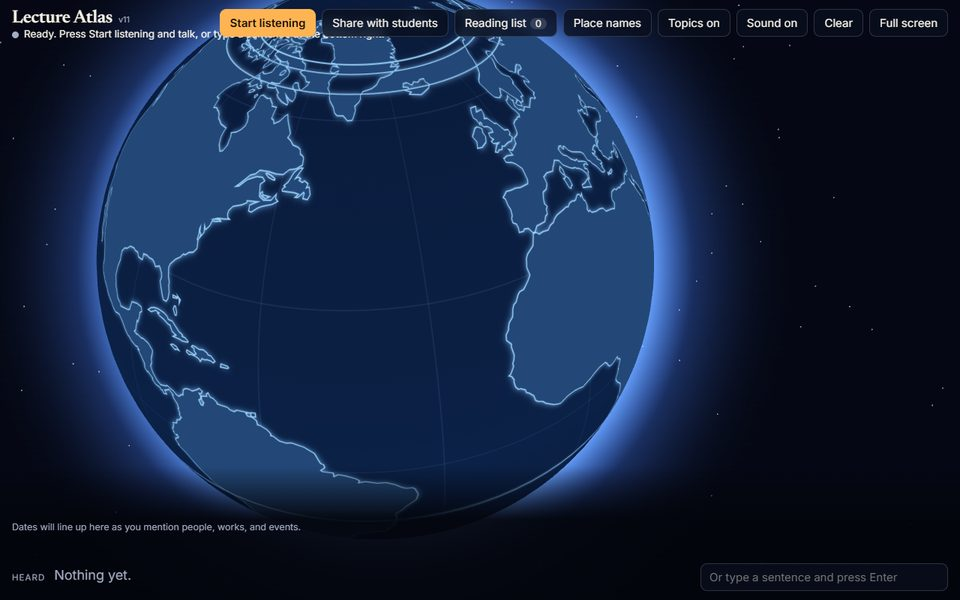
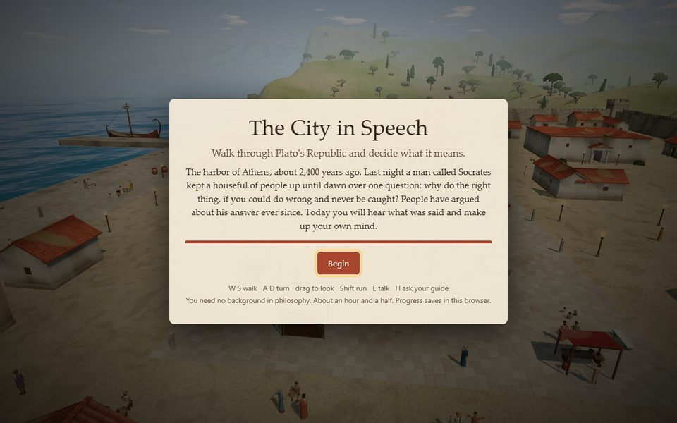

-

Lecture Atlas
Lecture Atlas listens while you give a talk and pins each person, place, work, and idea you mention on a 3D globe, with its picture, its dates on a timeline, and lines to the things it is connected to. Students can follow along on their own phones, and everyone gets a reading list at the end.
It runs in Chrome or Edge on a computer with a microphone.
-

The City in Speech
The City in Speech is a game that walks you through Plato's Republic, set at the harbor of Athens on the day after the conversation. You hear what was said the night before, listen to people who disagree about what it means, and decide what you think.
It needs a desktop browser with a keyboard and mouse. You need no background in philosophy, and a full run of this first part takes about an hour and a half.